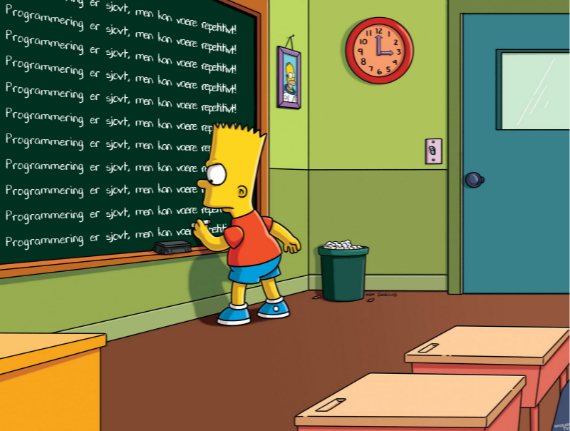

Lykken er løkker
I præsentationen om tilfældige tal, så I koden til spillet "gæt et tal". I programmet blev de anvendt en while-løkke og den blev også i afleveringen "Flugten på Dune". I denne præsentation vil I få dybere forklaring på anvendelsen af while-løkken og dens nære fætter for-løkken.
Overordnet set går anvendelsen af løkker ud på at kunne køre den samme kode mange gange. while-løkken anvendes til at køre kode indtil en betingelse er opfyldt, mens for-løkken anvendes til at køre kode et bestemt antal gange.
Vi lægger ud med for-løkken.
For-løkken
Først en lille anekdote om (Johan) Carl Friedrich Gauss.
Som blev udsat for at skulle lægge alle naturlige tal sammen op til 100.
Naive løsninger til Gauss' problem
Den helt dumme løsning
Første metode er bare at gøre, hvad der blev sagt:
resultat = 1 + 2 + 3 + 4 + 5 + 6 + 7 + 8 + 9 + 10 resultat += 11 + 12 + 13 + 14 + 15 + 16 + 17 + 18 + 19 + 20 resultat += 21 + 22 + 23 + 24 + 25 + 26 + 27 + 28 + 29 + 30 resultat += 31 + 32 + 33 + 34 + 35 + 36 + 37 + 38 + 39 + 40 resultat += 41 + 42 + 43 + 44 + 45 + 46 + 47 + 48 + 49 + 50 resultat += 51 + 52 + 53 + 54 + 55 + 56 + 57 + 58 + 59 + 60 resultat += 61 + 62 + 63 + 64 + 65 + 66 + 67 + 68 + 69 + 70 resultat += 71 + 72 + 73 + 74 + 75 + 76 + 77 + 78 + 79 + 80 resultat += 81 + 82 + 83 + 84 + 85 + 86 + 87 + 88 + 89 + 90 resultat += 91 + 92 + 93 + 94 + 95 + 96 + 97 + 98 + 99 + 100 print(f"Summen af alle naturlige tal op til 100 er: {resultat}.")
Dette er altså ikke særligt elegant. Tænk, hvis vi skulle lægge alle hele tal sammen fra 1 til 1000. Øv bøv.
Det kan gøres smartere med en for-løkke
Vi kan gøre det meget nemmere ved hjælp af en for-løkke.
resultat = 0 for tal in range(101): resultat += tal print(f"Summen af alle naturlige tal op til 100 er: {resultat}.")
Dette var da meget nemmere! Dette virker også for alle hele tal mellem f.eks. 1 og 1000. Vi skal sågar kun ændre på ét tal.
Gauss' metode
Essensen i Gauss' metode er at \[\sum_{i=1}^{i=n} i = 1 + 2 + 3 + \dots + n-1 + n = \frac{n\cdot \left( n+1 \right)}{2}\]
Gauss' løsning skrevet i python:
def sum_af_naturlige_op_til_n(n): return n*(n+1)//2 resultat = sum_af_naturlige_op_til_n(100) print(f"Summen af alle naturlige tal op til 100 er: {resultat}.")
For små tal er der er ingen rigtig forskel i eksekveringstiden for de to funktioner, men for f.eks. 10 000 000, begynder der at være betydelig forskel.
Eksekveringstid
import time def naiv_sum(n): resultat = 0 for tal in range(n+1): resultat += tal return resultat def sum_af_naturlige_op_til_n(n): return n*(n+1)//2 n = 100 starttid_naiv = time.time() resultat_naiv = naiv_sum(n) stoptid_naiv = time.time() print(f"Naiv: Summen af alle naturlige tal op til {n} er: {resultat_naiv}.") starttid_gauss= time.time() resultat_gauss = sum_af_naturlige_op_til_n(n) stoptid_gauss = time.time() print(f"Gauss: Summen af alle naturlige tal op til {n} er: {resultat_naiv}.") print(f"Tid for naiv: {stoptid_naiv - starttid_naiv} s.") print(f"Tid for gauss: {stoptid_gauss - starttid_gauss} s.")
Opgave

(Figuren er genereret her: https://www.ranzey.com/generators/bart/index.html)
- Skriv jeres eget program, som kan udskrive det samme som Bart gør på billedet.
- I skal anvende en for-løkke.
Hvis man ikke har tænkt sig at bruge indekset i en for-løkke, er konventionen at kalde den _ i stedet for
talelleri.f.eks.
for _ in range(10):
range-funktionen
range-funktionen fungerer på følgende måde
range(10)
Er en generator som returnere alle hele tal fra og med 0 til (men ikke med) 10, altså [0, 1, 2, 3, 4, 5, 6, 7, 8, 9].
range(2, 10)
Her får man de hele tal startende fra og med 2 til (men ikke med) 10, altså [2, 3, 4, 5, 6, 7, 8, 9].
range(2, 21, 3)
Hvis der er tre argumenter, så er det sidste argument en skridtlængde. Her starter talrækken fra og med 2, og så hvert 3. naturlige tal der fra op til (men ikke med 21), altså [2, 5, 8, 11, 14, 17, 20].
range(20, 7, -2)
Her tælles der ned i stedet for med en skridtlængde på -2. Altså fås tallene [20, 18, 16, 14, 12, 10, 8].
Flere for-løkker inden i hinanden
Hvis man gerne vil opbygge en 3x5-matrice (altså et gitter af tal i 2 dimensioner), som ser således ud
| 11 | 12 | 13 | 14 | 15 |
|---|---|---|---|---|
| 21 | 22 | 23 | 24 | 25 |
| 31 | 23 | 33 | 34 | 35 |
kan den bygges op med de to følgende for-løkker inden i hinanden.
output = "" for raekke in range(3): for soejle in range(5): output += str(raekke+1)+str(soejle+1) + " " output += "\n" print(output)
Programmeringsopgaver
De følgende opgaver skal gerne løses vha. for-løkker.
- Udskriv "Hep hey!" 17 gange til terminalen.
- Udskriv en gangetabel for de "små" tabeller (1- til 10-tabellen)
Forståelsesopgaver
Hvad printes der ud her?
for i in range(3): print("a") for j in range(3): print("b")
Hvad er værdien af
a, når den printes ud til sidst?a = 0 for i in range(10): a = a + 1 print(a)
Hvad er værdien af
anu, når den printes ud til sidst?a = 0 for i in range(10): a = a + 1 for j in range(10): a = a + 1 print(a)
Hvad er værdien af
anu, når den printes ud til sidst?a = 0 for i in range(10): a = a + 1 for j in range(10): a = a + 1 print(a)
Hvad er værdien af
total?total = 0 for i in range(1, 11): total += i print(total)
while-løkken
Mens for-løkker anvendes, når en blok skal gentages et bestemt antal gange, så anvendes en while-løkke, indtil en særlig tilstand opstår. Altså, anvend for-løkker, når I kender antallet af gange en kodeblok skal gentages. Anvend while-løkker, når en kodeblok skal gentages et ukendt antal gange indtil en betingelse er opfyldt.
Lad os tælle til ti
Som det første lærer mange børn at tælle til ti. Det kan vi også gøre med løkker.
Med en for-løkke er det så simpelt som
for i in range(1,10+1): print(i)
Med en while-løkke ser det lidt anderledes ud:
i = 1 while i <= 10: print(i) i +=1
Forskel på for og while
Når man anvender en while-løkke, opretter man ofte en variabel, hvis formål blot er at holde styr et tal eller lignende. I det forrige eksempel var det f.eks. i = 1. Når while-løkken er kørt igennem ligger variablen stadig gemt i programmet hukommelse. For en for-løkke oprettes den midlertidige variabel automatisk, og variablen bliver ledig igen efter for-løkkens afslutning. En anden forskel er, at man ofte selv skal huske at ændre værdien af den midlertidige variabel et sted i while-løkken (ofte som det sidste, men nogen gange også som det første). Hvis man ikke gør det, kan while-løkken meget nemt blive til en uendelig løkke, altså en løkke, som aldrig stopper! Dette problem opstår oftest ikke, hvis man anvender for-løkker.
Typiske problemer med while-løkker
Meningen med det følgende program er, at det skal tælle ned fra 10. Hvad er der galt med koden? Hvordan kan det fikses?
i = 10 while i == 0: print(i) i -= 1
Det følgende program ønsker at tælle op til 10. Hvad sker der, når man kører programmet? Hvordan kan det fikses?
i = 1 while 1 < 10: print(i)
while True, break og continue
En while-løkke kan ofte anvendes til at holde f.eks. et spil kørende indtil der foretages et eller flere valg.
Forestil jer, at I er i gang med et fint lille rollespil, hvor en gruppe af helte møder en stor drage:
Spillet kan spørge, om man ønsker at stoppe og om man ønsker at angribe dragen. I kan selv komme på flere eksempler. Her er en række måder at skrive det op på:
Eksempel 1:
faerdig = False while not faerdig: luk = input("Ønsker du at lukke? ") if luk.lower() in ["j", "ja"]: faerdig = True angrib = input("Skal elveren angribe dragen? ") if angrib.lower() in ["j", "ja"]: print("Dårligt valg! Dragen er ALT for stærk. Du døde!") faerdig = True
Problemet med Eksempel 1 er, at brugeren spørges om elveren skal angribe dragen, selvom faerdig allerede er sat til True. I den følgende kode tages der højde for dette:
Eksempel 2:
faerdig = False while not faerdig: luk = input("Ønsker du at lukke? ") if luk.lower() in ["j", "ja"]: faerdig = True if not faerdig: angrib = input("Skal elveren angribe dragen? ") if angrib.lower() in ["j", "ja"]: print("Dårligt valg! Dragen er ALT for stærk. Du døde!") faerdig = True
Endelig kan man også anvende kommandoen break for at bryde ud af en løkke. Et typisk tilsvarende eksempel, som de forrige, vil da se således:
Eksempel 3:
while True: # Kører for evigt luk = input("Ønsker du at lukke? ") if luk.lower() in ["j", "ja"]: break # Bryder ud af den inderste løkke (Der er kun én løkke i dette eksempel). angrib = input("Skal elveren angribe dragen? ") if angrib.lower() in ["j", "ja"]: print("Dårligt valg!. Dragen er ALT for stærk. Du døde!") break
Hvis man anvender continue i midten af eksekveringen af en løkke, så springes der direkte tilbage til toppen af løkken.
Forståelsesopgaver
Skriv en while-løkke gør det samme, som den følgende for-løkke:
for i in range(10): print(i)
Hvad vil følgende kode udskrive, og hvorfor?
i = 1 while i <= 2**32: print(i) i *= 2
- Skriv en simpel while-løkke, som spørger brugeren om vedkommende vil fortsætte. Løkken skal starte forfra indtil brugeren skriver "nej" eller lignende.
Kodeopgaver
For at kunne besvare de følgende to opgaver skal I lige have en introduktion til binære tal. Det tager vi lige på tavlen. Om I vil anvende for- eller while-løkker, det må I selv om. Hvis I kan komme på løsningsmetoder, så er det også helt ok.
Konverter fra titalstal til binære tal
Skriv en funktion, som tager et tal i titalsbasis (et almindeligt tal) som argument, og returnere tallet skrevet i binære tal.
Følgende algoritme kan anvendes til at konvertere fra titalsbasis til binære tal:
- Tag starttallet og divider det med 2.
- Skriv resten som er tilbage efter divisionen ned. Dette er enten 0 eller 1. Dette til være det sidste ciffer i det binære tal, altså tallet længst til højre.
- Gem kvotienten fra den tidligere division. Altså det største hele tal, som fremkommer ved divisionen. Dette tal er jeres nye starttal.
- Gentag de første 3 skridt indtil der ikke er mere at dividere. Sørg for at nedskrive de nye rester til venstre for de forrige rester.
Konverter fra binære til til titalstal
Skriv en funktion, som tager et binært tal som argument, og returnerer tallet skrevet som almindelige tal i basis ti (et almindeligt tal).
Her er en algoritme, som kan gøre det:
- Tag tallet længst til venstre i tallet. Multiplicér tallet med 2.
- Læg det næste ciffer i det binære tal til det forrige resultat. Dette vil være det nye starttal.
- Gentag de to beskrevne skridt indtil der ikke er flere cifre. Først gang med 2 og læg så det sidste ciffer til.